The man who came back
Sent home from this department two nights ago. Now he’s back — febrile, drenched, and getting worse. Five weeks of feeling wrong, and nobody has yet joined it up.
Walked in pale and sweating after nearly fainting at home this morning. Vomiting, loose stools, weeks of drenching night sweats, and a back that has been getting worse for a fortnight. Seen here Saturday night with palpitations and discharged — “the tracing was fine”. His partner Sophie is at the bedside.
- 1Work him up in stages — history, then examination, then investigations. You can step back to any completed stage to reassess him; the case counts how often you do.
- 2Order investigations in rounds — the clock jumps by the slowest test. Re-examine when results change the picture.
- 3Commit a diagnosis once the results justify it — only then does treatment open. Then prove you can manage it.
Tap to ask. Each question costs about 30 seconds.

The core systems are quick. Reach for a focused examination when the story calls for it — choosing the right one is the skill.
Further / focused examinations ▾
Build a round, send it, read the results. Order as many rounds as you need — the clock jumps by the slowest test each round.
You've called it. Now treat him: get the first-line care right — the onward plan unlocks when the basics are safe. Reassess after anything you give.
Commit your diagnosis
No list to pick from. Name it the way you'd write it in the notes.
Now manage it
You've made the diagnosis. This is what separates safe from dangerous — the decisions, with the evidence behind each.
- When a previously well man collects events in organs that have nothing to do with each other — a coronary, a disc space, a retina, a spleen, a kidney — stop diagnosing organs. Something upstream is seeding them, and upstream of everything is the heart.
- Fever plus a new regurgitant murmur is endocarditis until proven otherwise, and the proof is three sets of cultures from separate sites, 30–60 minutes apart, before antibiotics. A single premature dose can sterilise them and commit him to six weeks of empirical therapy with no organism and no sensitivities. Only genuine septic shock or neurological compromise overrides that.
- The diagnosis is made in the peripheries. A tender nodule on the wrist, splinter haemorrhages in the nailbeds, a swinging temperature chart, the state of his teeth, splenic and renal infarcts, microscopic haematuria — almost none of it needs a machine. In a febrile patient with a murmur, that examination is the investigation. And note what was normal: the fundi were clean. Absent signs never exclude it.
- A normal transthoracic echo does not exclude endocarditis. TTE finds around 70% of native-valve vegetations and far fewer with poor windows; TOE exceeds 90% and is the only reliable way to see a root abscess. If the story is convincing, escalate the imaging rather than the reassurance.
- Coronary embolism from a vegetation is a type 2 infarct (Fourth Universal Definition) — a real infarct, by a non-atherothrombotic mechanism. That label decides the treatment: you sterilise the valve, you do not reflexively stent.
- Thrombolysis here is the worst thing on the trolley. Septic emboli seed mycotic aneurysms, and lysis turns them into catastrophic haemorrhage. Stenting infected material invites stent infection, so aspiration or balloon alone is preferred, and dual antiplatelets have no role without atherosclerotic disease.
- New focal back pain with fever is a septic spine until MRI says otherwise — and plain films stay normal for the first two to four weeks, so a reassuring X-ray means nothing. Image the whole spine: seeding is often multi-level, and the question that decides tonight is whether anything is compressing the cord.
- Spondylodiscitis and endocarditis travel together — vertebral osteomyelitis is found in roughly one in ten patients with endocarditis, and the traffic runs both ways. Find one, echo the other.
- Watch the QT you already own. Sertraline had his QTc at 476 ms before you prescribed anything — ondansetron on top invites torsades. Metoclopramide spares the QT.